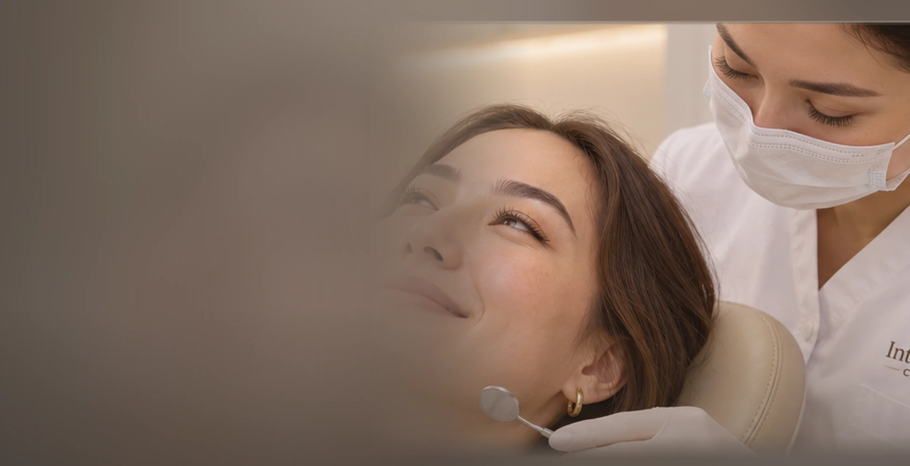

Диагностика до лечения
Прицельные снимки, панорамная рентгенография и 3D-томография по показаниям.

[ СТОМАТОЛОГИЯ ПОЛНОГО ЦИКЛА В АСТАНЕ ]
Лечение зубов, имплантация и исправление прикуса
Врачи разных направлений, 3D-диагностика и лечение под микроскопом — по одному адресу.
ПОЧЕМУ INTERDENT CLINIC
Здесь объясняют варианты лечения, показывают результаты диагностики и помогают составить план — от первого осмотра до восстановления улыбки.
Прицельные снимки, панорамная рентгенография и 3D-томография по показаниям.
Терапевт, хирург, ортодонт, ортопед и эндодонтист в одной клинике.
Детальная работа при лечении корневых каналов и сложных клинических ситуациях.
Стоимость основных процедур есть на сайте, решение о лечении — после консультации.
ЧЕМ МЫ МОЖЕМ ПОМОЧЬ
ПЕРВЫЙ ШАГ
Начните с понятного плана лечения
Врач выслушает жалобы, проведёт осмотр и объяснит возможные варианты. Снимки и 3D-КТ назначаются по показаниям и оплачиваются отдельно.
 Иллюстративное изображение
Иллюстративное изображениеЧТО СТОИТ ЛЕЧЕНИЕ
Основные позиции прайса Interdent Clinic. Стоимость и план лечения уточняются после осмотра.
Стоимость All-on-4 / All-on-6 будет доступна в полном прайс-листе клиники.
Цены на лечение кариеса, пульпита и периодонтита указаны с учётом анестезии, коффердама и восстановления зуба.
Полный PDF-прайс будет опубликован после получения файла от клиники.
Уточнить стоимость в WhatsApp ↗КОМАНДА КЛИНИКИ
Познакомьтесь со специалистами, к которым вы придёте на приём.

Стоматолог-хирург
Опыт: с 2015 года

Стоматолог-ортопед
Опыт: более 10 лет

Стоматолог-ортодонт
Опыт: с 2014 года
Терапевт, эндодонтист, микроскопист
Опыт: с 2023 года

Стоматолог-терапевт
Опыт: с 2020 года

Стоматолог-терапевт
Опыт: с 2020 года
Стоматолог-терапевт
Опыт: с 2026 года
Фотографии некоторых специалистов будут добавлены после получения оригиналов.
ГОВОРЯТ ПАЦИЕНТЫ
Оригинальные скриншоты отзывов. Нажмите на карточку, чтобы прочитать полностью.
ОФИЦИАЛЬНАЯ ИНФОРМАЦИЯ
Лицензия и документы о регистрации юридического лица доступны для просмотра.
Медицинская деятельность ведётся по лицензии № 23009225. Приложение на стоматологию оформлено для адреса в Астане, ул. Кенесары, 52.
Открыть лицензию (PDF) ↗Справка о регистрации (PDF) ↗Қазақша анықтама (PDF) ↗

ЖДЁМ ВАС
 Лечение под микроскопом · иллюстрация
Лечение под микроскопом · иллюстрацияЛицензиат: ТОО «ОркенМед», БИН 200840005030. Лицензия на медицинскую деятельность от 18.04.2023. Приложение №007 от 31.01.2024: стоматология, Астана, ул. Кенесары, 52.
Оригиналы документов, переданные клиникой, доступны для просмотра в формате PDF.